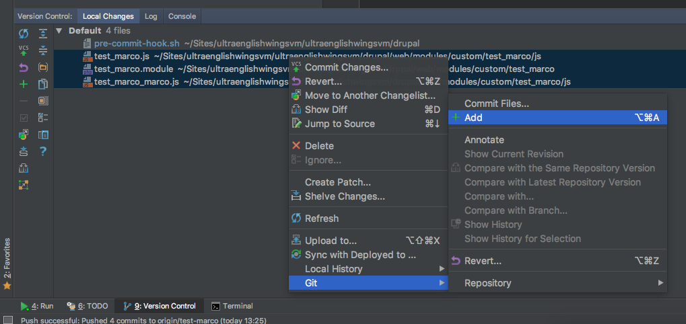
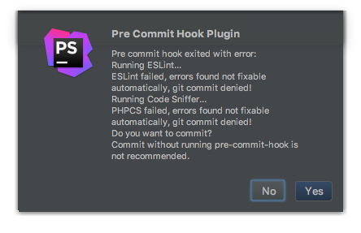

Pre Commit Hook¶
The PhpStorm commit window already integrate the Perform code analysis tool but, for some reason, it's not able to run the PHP Code Sniffer Validation as when you launch the normal Inspect Code.
So we need to setup an alternative way to do it properly through the git pre-commit hook.
Setup a Git pre-commit hook to check Coding Standards¶
First of all make sure to have the Pre Commit Hook Plugin for PhpStorm installed and enabled.
The following instructions are to setup the pre-commit hook script at the init of the project. If you are not sure that your project was already init for it you must check for:
- your
composer.jsonand look for the packagejover_be/drupal-code-check(probably it's underrequire-dev) - your
drupalroot directory and look for thepre-commit-hook.shfile
If you have both you can jump directly to Run the Pre Commit Code Analysis.
1. Install Drupal Code Check Package¶
From your vagrant machine on your drupal root directory run:
composer require --dev jover_be/drupal-code-check
2. Pre Commit Hook Script¶
The Pre Commit Hook Plugin looks for the pre-commit-hook.sh file script on your project root directory. To create it, from your drupal root directory run:
touch pre-commit-hook.sh
Make sure the pre-commit script is executable:
chmod +x pre-commit-hook.sh
Populate the script with our default. Copy and paste the content of Drupal Pre Commit Hook.
This script run a Coder Sniffer and ESlint code analysis with syntax auto fix, so make sure to have them installed as required.
3. Run the Pre Commit Code Analysis¶
To make the pre-commit script work, you must run git add of the files to commit before the commit itself.
The script is set to check only those added file to avoid to check all the modified files that could be not involved in your commit.
To git add the files of your commit in PhpStorm:

If everything is well set, when you perform a commit, PhpStorm auto-run the Code Analysis and, in case of errors/warnings, it's gonna show you something like this:

In case of errors/warnings it's suggested to undone the commit and manually run the Inspect Code to fix all the possible issues. A better workflow is to manually run the Inspect Code before to commit.